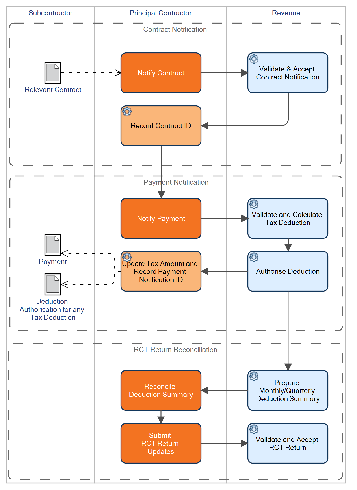

The Relevant Contracts Tax (RCT) subcontractor tax scheme in Ireland changed in January 2012 from a heavily paper-based scheme in which many of the requirements were fulfilled manually by contractors, to a new scheme that is as far as possible entirely electronic and paper-free with mandatory electronic communication between contractors and Revenue for all key processes. For this reason the new scheme is sometimes referred to by Revenue as eRCT.
The RCT scheme aims to improve compliance among subcontractors in the construction industry by ensuring that payments from principal contractors to subcontractors are notified to Revenue, and that tax is deducted at source where appropriate.
Under eRCT, there are three key processes: Contract Notification, Payment Notification and the RCT Return. There are additional processes to handle amendments, cancellations, etc.

The first key process is Contract Notification (this replaces the old RCT1 and RCT46). All Relevant Contracts must be notified electronically to Revenue before any payments are made. This can either be done directly online using ROS or using third party software such as
The second key process is Payment Notification (this replaces the old RCT 47 and RCT48). All proposed payments on Relevant Contracts must be notified electronically to Revenue before they are made. On receipt of the Payment Notification, Revenue will advise the Principal of the amount of tax to be deducted from the payment, if any. This can either be done directly online using ROS or using third party software such as
The third key process is the RCT Return (this replaces the old RCT30 and RCT35). This is an electronic return of payments made on Relevant Contracts which will be processed either monthly or quarterly depending on the filing frequency of the Principal. The draft return (also known as 'Deduction Summary') will be produced by Revenue based on the Payment Notifications received during the period. This will need to be checked by the Principal and any amendments made either directly online using ROS or using third party software such as
There are three tax deduction rates: 0%, 20%, and 35%. Subcontractors who satisfy the previous criteria for a C2 card will qualify for the 0% rate. In certain limited cases, subcontractors will be placed at 35% (for example, subcontractors who are not registered with Revenue or where there are serious compliance issues to be addressed). All other subcontractors are eligible for the standard 20% rate.